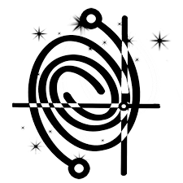

An initiative started by myself and my colleague Barnali Das, where we are creating educational videos in Indian languages with the goal of spreading Astronomy knowledge to a wide range of communities in India. We want to ignite curiosity and imagination for the Universe from a scientific standpoint. These videos are non-technical, and are suitable for any audience.
Our videos in हिंदी (Hindi):

CosmicVarta is a platform for promoting Indian Astronomy research in a non-technical way. We encourage Indian Astronomers to write about their research in a way that is engaging as well as understandable to a wide audience. We help edit those writings and then publish it on our website. We also have resources on how to pursue a career in astronomy.
I have been a scientific editor and a core team member of CosmicVarta. I have authored as well as edited articles on this platform, and have overseen the editing process.